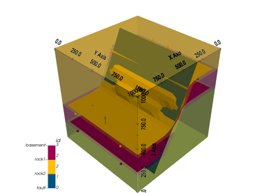
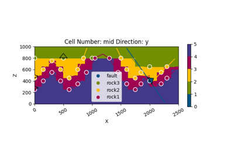

Examples¶
This examples intend to be a gallery of what other people has done with GemPy. Hopefully with the help of the community we can create a complete library of structures that can serve as template for new users.
Simple geometries¶
Some simple geometries.



Model 5 - Fault


Model 7 - Combination

Real case studies¶
These models are built with real data